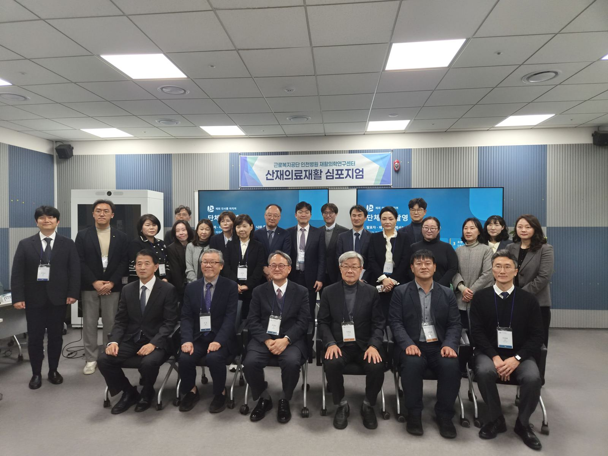
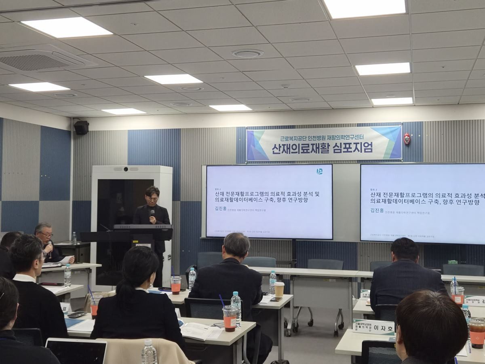
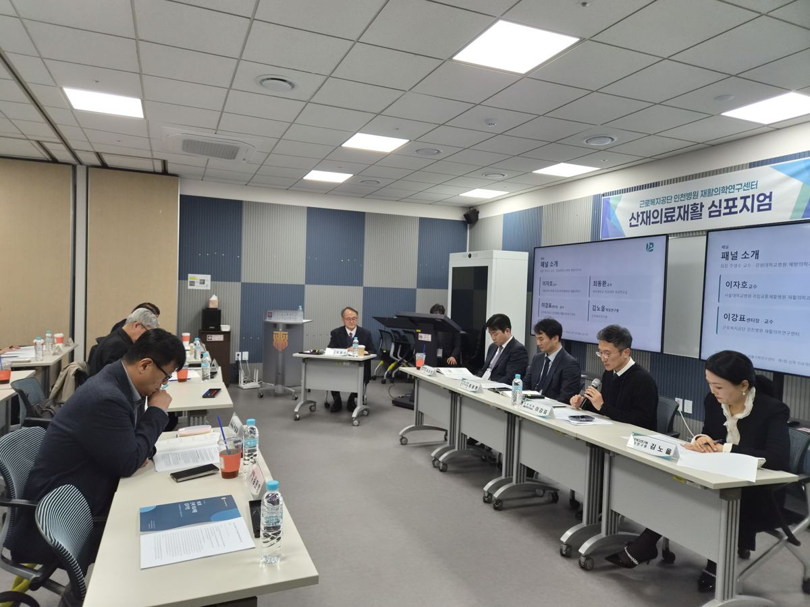

Series
2026 제1회 11. 13.
2027 제2회 개최 예정
2026 · 1st Symposium
제1회 산재 의료재활 심포지엄
성료
산재 의료재활의 오늘,
산재 의료재활의 오늘,
그리고 내일을 함께 그리다
- 일시
- 2026. 11. 13.(금) 10:00–12:20
- 장소
- 서울역 직업능력심사평가원 B101호 (서울시티타워 지하 1층)
- 참석
- 현장 30여 명 + Zoom 온라인 참여
- 주최
- 근로복지공단 인천병원 재활의학연구센터
고용노동부 산재보상정책과, 공단 본부, 근로복지연구원, 외부 전문가가 함께했습니다. 조준 인천병원장이 개회사를, 이재갑 수원대학교 석좌교수(전 고용노동부 장관)가 축사를 맡았습니다. 연구발표 3편과 패널토론으로 산재 전문재활의 근거와 의료기관 간 연계 방안을 논의했습니다.



프로그램
| 10:00 | 개회 및 참석자 소개 · 개회사 조준 인천병원장 · 축사 이재갑 수원대학교 석좌교수 |
| 10:15 | 발표 1 산재 전문재활프로그램의 개발, 국내 재활의료전달체계에서의 의미 조남순 · 인천병원 재활전문센터장 |
| 10:35 | 발표 2 산재 전문재활프로그램의 의료적 효과성 분석 및 의료재활데이터베이스 구축, 향후 연구방향 김진홍 · 인천병원 재활의학연구센터 책임연구원 |
| 10:55 | 발표 3 산재의료재활전달체계 및 소속의료기관의 역할 손동균 · 근로복지공단 서울의원 센터장 |
| 11:15 | 휴식 |
| 11:25 | 패널토론 산재외상재활 전달체계와 소속의료기관의 역할 좌장 주영수 · 강원대학교병원 예방의학과 교수
|
| 12:15 | 폐회 및 인사말씀 · 이강표 재활의학연구센터장 |
자료집
주요 내용
- 발표 1 · 조남순산재 환자의 재활은 신체기능 회복을 넘어 직장복귀까지 목표로 합니다. 손상 부위별 집중재활과 작업동작 훈련·작업능력평가 등 직장복귀 지원프로그램을 소개했고, 중증 외상환자는 급성기 치료가 길어져 회복기 재활기관의 입원 기준을 맞추기 어렵다는 한계를 짚었습니다.
- 발표 2 · 김진홍허리·어깨·하지골절·하지절단 네 차례 연구에서 전문재활 참여 후 통증·기능·보행 지표가 개선됐습니다. 재해 후 90일 이내 집중재활 연계가 중요하다는 점과, 의료재활데이터베이스를 산재보험·고용 자료와 연계해 직장복귀까지 분석하는 연구 방향을 제시했습니다.
- 발표 3 · 손동균건강보험 중심 체계가 산재 환자의 직장복귀 목적을 충분히 반영하지 못하고, 수가와 수익성에 따라 지역별 재활 접근성 격차가 생긴다고 분석했습니다. 권역외상센터와의 진료 연계, 산재 승인 전 조기 재활지원을 대안으로 제안했습니다.
- 패널토론급성기 치료 후 전원 과정의 치료 공백과 중증 산재환자의 재활 접근성 문제를 다뤘습니다. 의료기관 간 역할 분담·정보 공유·전원 기준 마련이 필요하다는 데 의견이 모였고, 서울·경인 지역 외상진료기관과 인천병원을 중심으로 한 중증외상 협력모델을 시범 검토하자는 제안이 나왔습니다.
패널 토론문 발언 순서 · 4편
01
산재 의료재활이 국내 재활의료체계 발전에 갖는 의미
이자호 · 서울대학교병원·국립교통재활병원 재활의학과 교수
산재 전문재활의 경험이 국내 재활의료 발전에 기여해 왔음을 짚고, 재활전문센터 인력·시설·연구 지원의 지속을 제안
02
외상외과 시각에서 본 산재 외상재활과 소속의료기관의 역할
최동환 · 아주대학교 의과대학 외상학교실 교수
권역외상센터 중환자실 단계부터 조기 재활계획을 세우고, 전원 후에도 소속의료기관이 연속성을 이어받는 구조를 제안
03
산재 외상재활 및 소속의료기관의 역할
이강표 · 근로복지공단 인천병원 재활의학연구센터장
보험자 병원의 성과를 치료 경로·기능 회복·복귀로 평가하고, 조기 재활계획과 전달체계를 공동연구로 먼저 구축하자고 제안
04
산재 외상재활 제도개선 및 운영방향
김노을 · 근로복지공단 근로복지연구원 책임연구원
전문재활 공급기반이 적시 이용으로 이어지지 못하는 원인을 수요·공급·전달체계 측면에서 분석하고, 재활인증의료기관 평가 개선 방향을 제시
토론문은 각 패널의 개인 의견이며, 근로복지공단의 공식 입장과 다를 수 있습니다.
Archive
연도별 자료실
| 연도 | 회차 · 주제 | 일시 · 장소 | 자료 |
|---|---|---|---|
| 2027 | 제2회 산재 의료재활 심포지엄 | 일정 확정 후 안내 | — |
| 2026 | 제1회 · 산재 의료재활의 오늘, 그리고 내일을 함께 그리다 | 11. 13.(금) · 서울역 직업능력심사평가원 | 자료집 패널 토론문 4편 |
심포지엄 문의 · 인천병원 재활의학연구센터 · 032-500-0639
센터 소식으로 돌아가기